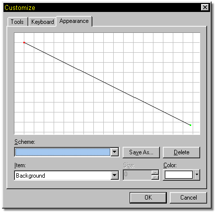
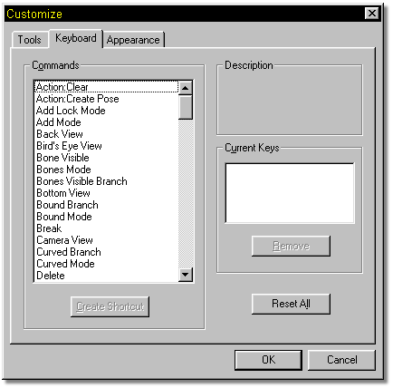
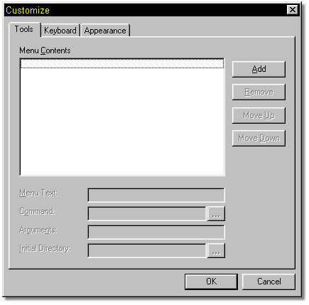

The options available under Tools/Customize allow you to make changes to the
look and feel of the MH3D interface. When you select it, a window will open with
three tabs on it, each allowing different options.
The options available under Tools/Customize allow you to make changes to the
look and feel of the MH3D interface. When you select it, a window will open with
three tabs on it, each allowing different options.

The Appearance tab allows you to make changes to the look, or color scheme of the interface. The lower drop down list has a list of available items for you to customize. The upper area will show the changes you make to the colors. If you create a set of colors that you would like to save, click the Save As button, and give the color scheme a name. It will then appear in the Scheme Drop Down list for recall later if you decide to change your scheme.

The Keyboard tab allows you to customize the keyboard shortcuts to your liking. The main section of this window contains a list of all available shortcuts. To change one, simply click on it, then click the Add button.

The Tools tab allows you to add your own tools (perhaps a favorite paint program) to the Tools menu item in MH3D for quick acces. To add an application, click the Add button, then locate the necessary files. The menu item will appear as you enter it.